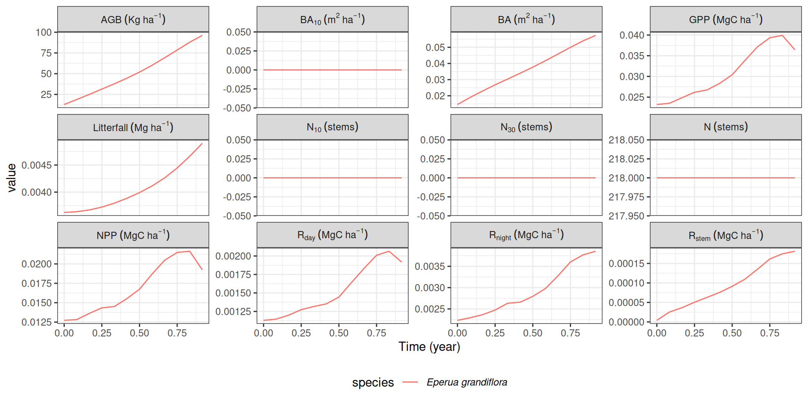
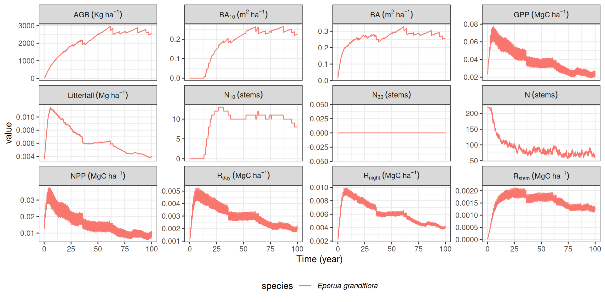
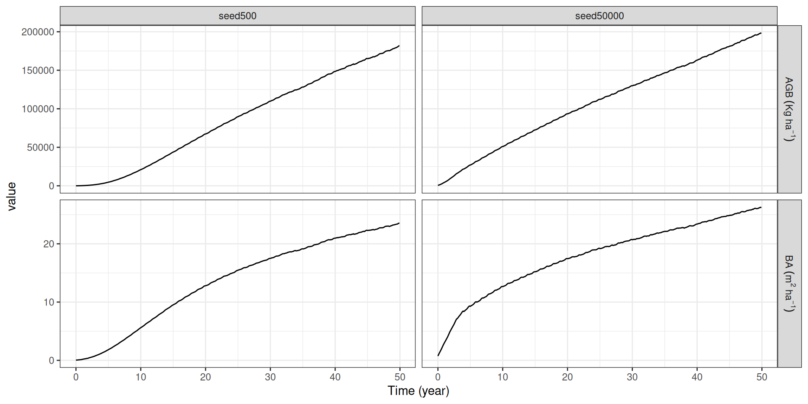

Travaux Pratiques rcontroll
Une interface R pour le simulateur de dynamique forestière basé sur les individus TROLL
CIRAD
Oct 28, 2025
Introduction
Packages
Pendant ce TP, nous allons utiliser le modèle TROLL (Maréchaux and Chave 2017), avec le package rcontroll (Schmitt et al. 2023). Nous utiliserons aussi les package dplyr (Wickham et al. 2023), tidyr (Wickham, Vaughan, and Girlich 2024) et ggplot2 (Wickham 2016).
Pour télécharger les packages :
Ensuite, vous pouvez charger les packages :
TROLL
TROLL modélise chaque arbre individuellement dans un environnement spatialisé. Le modèle TROLL peut donc être défini comme un modèle de croissance forestière individu centré et spatialement explicite. TROLL simule le cycle de vie des arbres depuis le recrutement à partir d’un diamètre à hauteur de poitrine (dbh) de 1cm, jusqu’à la mort. Les arbres poussent dans un environnement lumineux, les valeurs de lumière sont calculées dans des voxels de 1m3.
TROLL
Chaque arbre est défini par son âge, son diamètre à hauteur de poitrine (dbh), sa hauteur (h), le rayon de son houppier (CR), la profondeur de son houppier (CD) et sa surface foliaire (LA). La géométrie de l’arbre est calculée à l’aide d’équations allométriques, et la surface foliaire varie dynamiquement au sein de chaque couronne en fonction des allocations de carbone. Au maximum un arbre peut s’installer dans chaque pixel de 1x1m. Chaque arbre appartient à une espèce, héritée de son arbre parent. Pour chaque espèce, un certain nombre de paramètres sont connus : les valeurs de traits de cette espèces, qui ont été récoltés sur le terrain. L’assimilation du carbone est calculée sur une période d’une demi-heure. L’allocation est ensuite calculée pour simuler la croissance des arbres. L’environnement est mis à jour chaque mois. Les juvéniles (arbres dont le dbh < 1cm) ne sont pas simulés explicitement mais comme un groupe. En outre, les processus souterrains, les plantes herbacées, les épiphytes et les lianes ne sont pas simulés dans TROLL.
Données
Espèces
Pour fonctionner, le modèle TROLL utilise une liste de traits fonctionnels. Vous pouvez charger les valeurs de trait pour un ensemble d’espèces de Guyane française, et explorer ces données :
Question 1 : Combien de traits sont recensés dans ce tableau, et pour combien d’espèce?
Question 2 : Quelles sont les espèces d’arbre de Guyane française que vous connaissez? Les valeurs de trait sont-elles présentes dans la table pour ces espèces?
Espèces
Question 1 : Combien de traits sont recensés dans ce tableau, et pour combien d’espèce?
[1] 45 12Espèces
Question 2 : Quelles sont les espèces d’arbre de Guyane française que vous connaissez? Les valeurs de trait sont-elles présentes dans la table pour ces espèces?
# A tibble: 6 × 12
s_name s_LMA s_Nmass s_Pmass s_wsg s_dbhmax s_hmax s_ah s_seedmass
<chr> <dbl> <dbl> <dbl> <dbl> <dbl> <dbl> <dbl> <dbl>
1 Abarema_jupunba 110. 0.0232 5.7 e-4 0.576 0.66 50.9 0.308 1
2 Bocoa_prouacensis 95.6 0.0255 5.05e-4 0.798 0.4 47.9 0.251 1
3 Brosimum_rubesce… 85.8 0.0188 6.88e-4 0.619 0.52 50.9 0.308 1
4 Carapa_procera 130. 0.0177 6.36e-4 0.55 0.49 41.4 0.187 1
5 Caryocar_glabrum 84.2 0.0217 8.13e-4 0.612 1.15 48.6 0.275 1
6 Cecropia_obtusa 69.5 0.0276 1.38e-3 0.388 0.35 50.9 0.308 1
# ℹ 3 more variables: s_regionalfreq <dbl>, s_tlp <dbl>, s_drymass <dbl>Climat
Les équations qui décrivent les processus de la dynamique forestière dans le modèle TROLL font intervenir des variables climatiques, ces données sont réunies dans un tableau que vous pouvez charger et explorer :
Question 3 : Quelles sont les variables climatiques qui sont utilisées pour modéliser la dynamique forestière dans TROLL?
Question 4 : Quelles sont les valeurs moyennes de ces variables en Guyane française? Ces valeurs sont-elles cohérentes avec ce que vous savez des conditions d’existence des forêts tropicales?
Climat
Question 3 : Quelles sont les variables climatiques qui sont utilisées pour modéliser la dynamique forestière dans TROLL?
# A tibble: 6 × 12
Temperature DaytimeMeanTemperature NightTemperature Rainfall WindSpeed
<dbl> <dbl> <dbl> <dbl> <dbl>
1 24.3 26.4 23.0 9.46 0.904
2 24.3 26.2 23.0 9.52 0.941
3 24.1 26.4 23.0 9.58 0.876
4 24.6 26.8 23.0 10.5 0.908
5 24.6 26.7 23.4 16.0 0.756
6 24.6 26.5 23.0 8.05 0.828
# ℹ 7 more variables: DaytimeMeanIrradiance <dbl>, MeanIrradiance <dbl>,
# SaturatedVapourPressure <dbl>, VapourPressure <dbl>,
# VaporPressureDeficit <dbl>, DayTimeVapourPressureDeficitVPDbasic <dbl>,
# DaytimeMeanVapourPressureDeficit <dbl>Climat
Question 4 : Quelles sont les valeurs moyennes de ces variables en Guyane française? Ces valeurs sont-elles cohérentes avec ce que vous savez des conditions d’existence des forêts tropicales?
Temperature DaytimeMeanTemperature NightTemperature Rainfall
Min. :24.09 Min. :26.21 Min. :22.97 Min. : 0.586
1st Qu.:24.50 1st Qu.:26.49 1st Qu.:22.99 1st Qu.: 3.507
Median :24.73 Median :26.76 Median :23.17 Median : 7.669
Mean :25.04 Mean :27.32 Mean :23.31 Mean : 7.026
3rd Qu.:25.46 3rd Qu.:28.27 3rd Qu.:23.45 3rd Qu.: 9.537
Max. :26.72 Max. :29.39 Max. :24.11 Max. :15.997
WindSpeed DaytimeMeanIrradiance MeanIrradiance SaturatedVapourPressure
Min. :0.7560 Min. :293.2 Min. :130.1 Min. :2.988
1st Qu.:0.8600 1st Qu.:313.5 1st Qu.:149.6 1st Qu.:3.095
Median :0.9060 Median :329.4 Median :159.6 Median :3.152
Mean :0.9167 Mean :360.5 Mean :169.7 Mean :3.213
3rd Qu.:0.9772 3rd Qu.:415.3 3rd Qu.:186.3 3rd Qu.:3.306
Max. :1.0780 Max. :461.2 Max. :225.9 Max. :3.578
VapourPressure VaporPressureDeficit DayTimeVapourPressureDeficitVPDbasic
Min. :2.792 Min. :0.1520 Min. :0.2600
1st Qu.:2.840 1st Qu.:0.2052 1st Qu.:0.3767
Median :2.864 Median :0.2780 Median :0.4880
Mean :2.864 Mean :0.3510 Mean :0.6038
3rd Qu.:2.898 3rd Qu.:0.4370 3rd Qu.:0.7595
Max. :2.947 Max. :0.7620 Max. :1.2680
DaytimeMeanVapourPressureDeficit
Min. :0.4980
1st Qu.:0.5567
Median :0.6290
Mean :0.7973
3rd Qu.:1.0593
Max. :1.4250 Variation diurne
Dans le modèle TROLL, les processus d’assimilation du carbone par les plantes sont calculés sur un pas d’une demi-heure. Les données climatiques sont donc recalculées sur ce pas de temps, pour cela, vous aurez besoin de charger un troisième tableau, qui correspond aux variances des variables pour chaque pas de temps de la journée :
Paramètres
Il vous faut maintenant définir les paramètres de votre simulation :
le nombre de pas de temps par an
iterperyearle nombre de pas de temps total de la simulation
nbiterla taille de la parcelle simulée, grace aux nombres de colonnes
colset de lignesrowsle nombre de graines vennant de l’extérieur
seedrain
Paramètres
La fonction generate_parameters permet de créer un tableau avec les différents paramètres d’une simulation :
| param | value | description |
|---|---|---|
| cols | 250 | /* nb of columns */ |
| rows | 250 | /* nb of rows */ |
| HEIGHT | 70 | /* vertical extent of simulation */ |
| length_dcell | 25 | /* linear size of a dcell */ |
| nbiter | 12 | /* total nb of timesteps */ |
| iterperyear | 12 | /* number of iteration per year */ |
Question 5 : Si vous utilisez le code précédent, quelle est la durée de votre simulation?
Simulation
troll
Maintenant que vous avez les données nécessaires, vous pouvez réaliser une simulation. Pour réaliser une simulation, vous pouvez utiliser la fonction troll() :
Question 6 : Comment s’appelle votre simulation? Quel est son format (dans R)?
troll
Question 6 : Comment s’appelle votre simulation? Quel est son format (dans R)?
Object of class : trollsim
Name : test
Path :
In memory : TRUE
Extended : TRUE
From data : FALSE
Lidar simulation : FALSE
Random : FALSE
2D discrete network: horizontal step = 1 m, one tree per 1 m^2
Number of sites : 100 x 100
Number of iterations : 12
Duration of timestep : 30.41667 days
Number of Species : 45 Visualisation
autoplot
Vous pouvez utiliser la fonction autoplot() pour visualiser les résultats de votre simulation, pour cela vous devez choisir les arguments :
whatdoit valoir soit"temporal", soit"spatial", soit"distribution"speciesdoit être le nom de l’espèce à laquelle vous vous intéressez (entre guillemets)
Question 7 : Par binôme, choisissez une espèce, et remplissez le tableau avec votre numéro de binôme et le nom de l’espèce que vous avez choisie.
Question 8 : Quels sont les indicateurs auxquels vous pouvez avoir accès avec la fonction autoplot()?
Question 9 : Quelle est la surface terrière de cette espèce en début de simulation/ en fin de simulation? Comparez vos résultats avec ceux de vos camarades sur les autres espèces.
autoplot
Question 7 : Par binôme, choisissez une espèce, et remplissez le tableau avec votre numéro de binôme et le nom de l’espèce que vous avez choisie.

autoplot
Question 8 : Quels sont les indicateurs auxquels vous pouvez avoir accès avec la fonction autoplot()?
autoplot
Question 9 : Quelle est la surface terrière de cette espèce en début de simulation/ en fin de simulation? Comparez vos résultats avec ceux de vos camarades sur les autres espèces.

Multiples simulations
Pluie de graine
Pour comparer différentes simulations, il est possible de faire des simulations multiples, dont les jeux de paramètres peuvent être différents. Ici, nous allons réaliser des simulations en changeant la valeur de la pluie de graine.
Question 10 : En changeant la pluie de graine, quel(s) processus de la dynamique forestières est/seront impacté(s) et pourquoi ?
Question 11 : Comment se disperse l’espèce étudiée par votre binôme ?
Paramètres multiples
Vous pouvez utiliser à nouveaux la fonction generate_parameters(), mais cette fois en précisans qu’il y aura deux simulations, auxquelles on donnera les noms seed50000 et seed500. Ensuite, vous pouvez changer le paramètre de la pluie de graine de la simulation seed500 pour que ce paramètre soit égale à 500 :
stack
La fonction stack() permet des faire des simulations multiples, vous pouvez l’utiliser en précisant les paramètres des simulations avec l’argument global. Ici l’argument verbose prend la valeur FALSE pour éviter d’avoir les messages de TROLL, vous ne verrez donc qu’une barre de chargement pendant les simulations. Les autres arguments de la fonction stack() permettent entre autre de préciser le nombre de coeur utilisés (cores), et les itérations dont les résultats seront stockés (thin).
|
| | 0%
|
|======================================================================| 100%Visualisation multiples
Vous pouvez ensuite utiliser la fonction autoplot() comme vous l’avez fait avec une simulation simple :

Question 13 : Comment se comporte votre espèce? par rapport aux autres? Etait-ce attendu? A votre avis, quel(s) processus est/sont être responsable(s) de ce que vous observez?
Questions bonus exploratoire
A partir de simulations réalisées avec le modèle TROLL, à quelle question en écologie des forêts pouvez-vous répondre ?
Bonus
Visualisation dynamique
Code
data("TROLLv3_output")
gifs <- autogif(
name = "dynamic",
variables = "height_ct",
global = update_parameters(TROLLv3_output,
nbiter = 12 * 100,
extent_visual = 100
),
species = TROLLv3_output@inputs$species,
climate = TROLLv3_output@inputs$climate,
daily = TROLLv3_output@inputs$daily,
forest = get_forest(TROLLv3_output),
verbose = FALSE
)
gifs$height_ctResult

Conclusion
Félicitations 👏 , vous êtes désormais des pros de rcontroll !
Plus sérieusement, je serais ravis de répondre à toutes vos questions. N’hésitez pas à consulter GitHub si vous avez besoin d’aide plus tard.
Sylvain Schmitt (sylvain.schmitt@cirad.fr)